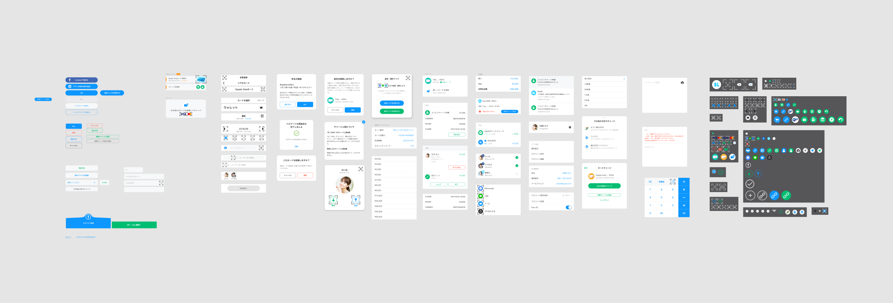
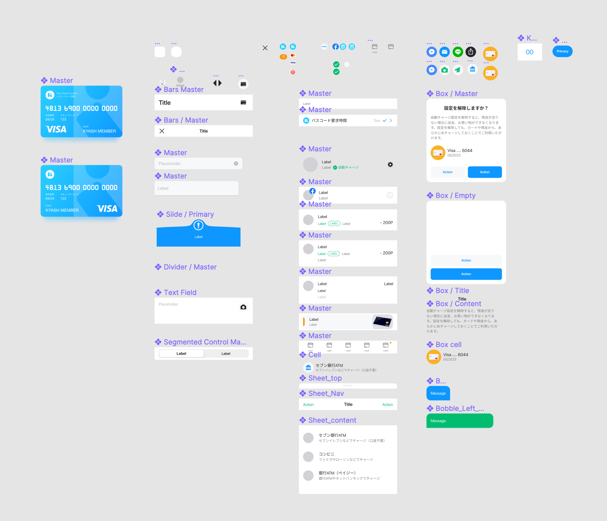
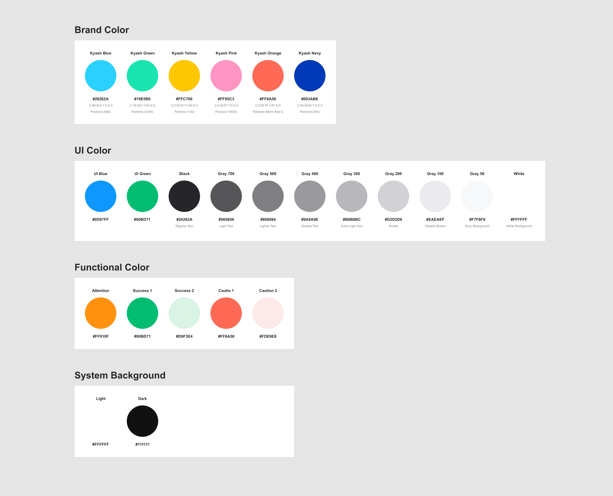

Problem
Kyash has undergone several revisions since its release in 2015, and has gone through a lot of designers.
When I just joined, I realize there were a lot of inconsistent components in the library, and there have so many misunderstandings in communication with engineers, some designs that people didn't even know why they were originally designed. Think of the speed of development and the plan of scale the design team, we decide to start to make our first design systems preview in the company.
Team
- Design manager
- Product desginer (Me)
- 2 iOS engineers
- 1 Android engineer
Goal
The original goal is to implement into the code base and supports dark mode with the new design system.
Think of our product team actually small and we have so many feature plans on the list, so we decide to make the first preview version on Figma and scale to the whole existing design.
Process
First thing first, the design manager (former designer) and I start to organize the all of the design files into one place and make an overview of our product design, it's easier to let us recognize what is inconsistent in our design, and also organize the whole components we use before in this design file.

Now we have all of the components and patterns into one place, so we just need to reorganize them, cutting and merge some, and try to make rules and naming it to easy follow in the future. In the end, I finally made 128 components to just 23 reusable components in our library.

And also, I reorganize the font rules and the color set base on our design language. About the icons, similar to components, I reorganize them and make clear order to easily follow up, and merge that into the component system.

After that, I start to use this new UI kit that we just made to recreate the overview screen each by each, it's helpful to let us know how to let the new system to fit in. It will not always perfect when you first time to make a design system, there still has some pages that can't use existing components to fit in, but we still can customize that to flexible handle the rare cases.
Final outcome
I publish the whole new design system preview in Figma library to allow all designer are using it, and share with the mobile development team to discuss how to implement into our codebase to speed up the development process.
And create a Slack channel inside the company for the design system, to allow any members in the team can share the feedback and contribute to making it better.
On the other hand, I also use some tools to make a website to let them easier to access and can see how it works in the code to helps it easy to do the developer handoff.


What I've learned
As we know, when you start to build a design system, there is no end. The design system will base on user feedback, which means the end-users, developers, and many other peoples use your product, so we need to keep iterate and maintain it to make it actually work into our development process. And this also can help us to understand why we design, and how we design, to share that experience and knowledge to the new members to understand our core culture. As a tool, it also helps the team can focus on the solutions not the pixels, to thinking wider for the ideas, not need to worry about the consistency of design or the design speed.